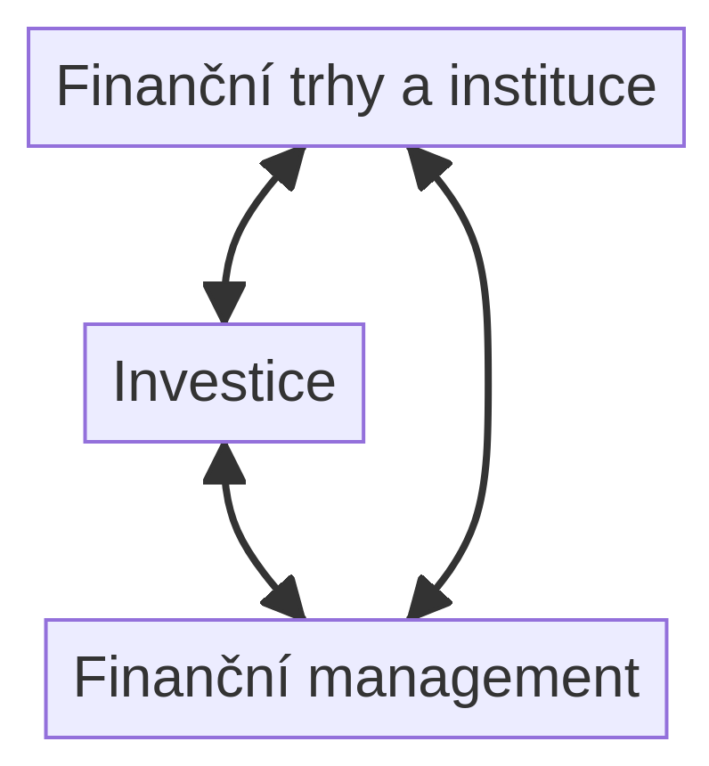
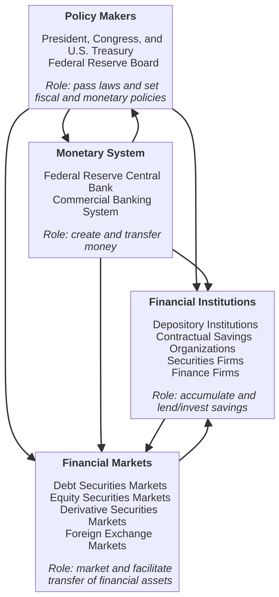
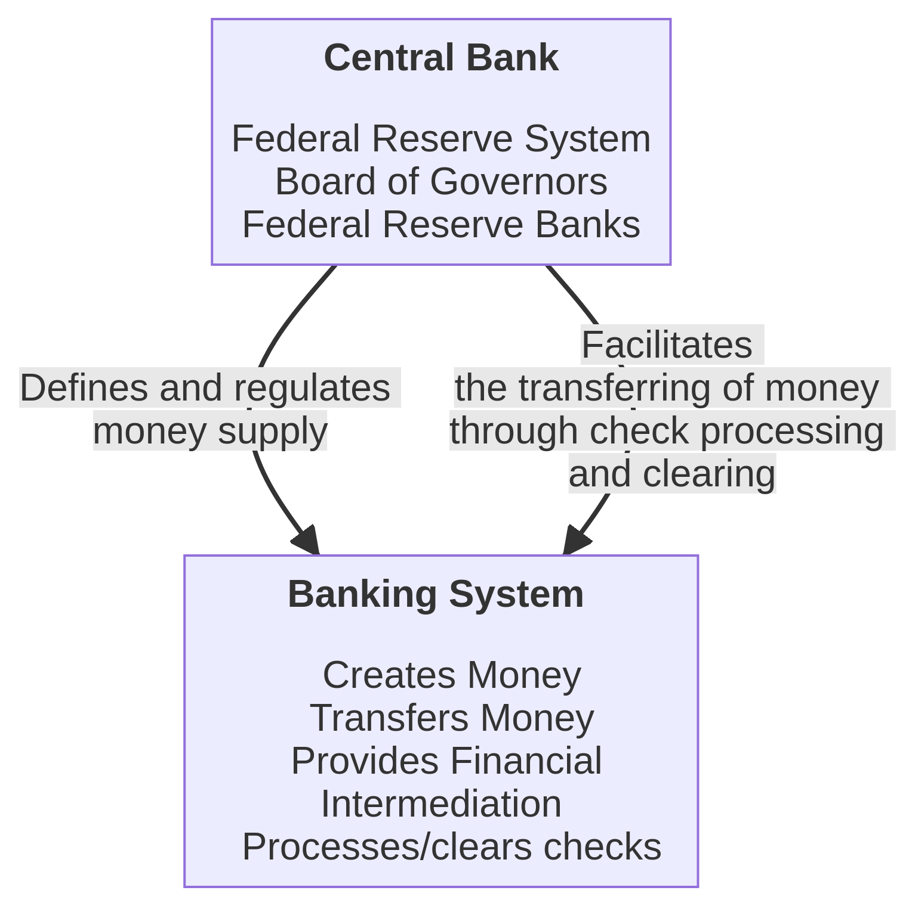

1 Úvod do financí
Studijní materiály
- Dahlquist, J. R., &; Knight, R. (2022). Principles of finance. OpenStax, Rice University. https://openstax.org/details/books/principles-finance
- Chapter 1 - Introduction to Finance
- Chapter 2 - Corporate Structure and Governance
- MELICHER Ronald W. a Edgar NORTON. Introduction to finance: markets investments and financial management. Seventeenth edition. Hoboken: Wiley 2020 xxix 613. ISBN 9781119561170
- Chapter 1 – The Financial Environment
- Chapter 2 – Money and the Monetary System
Výstupy z učení:
- Pochopit základní principy financí.
- Prozkoumat možnosti uplatnění v oblasti financí.
- Porozumět struktuře finančního systému.
- Znát funkce finančního systému.
- Identifikovat subjekty působící ve finančním systému.
- Pochopit peněžní systém a nabídku peněz.
1.1 Úvod do financí
1.1.1 Proč studovat finance
Finance hrají klíčovou roli v moderní ekonomice. Umožňují vlastnictví aktiv, jako jsou nemovitosti, a podporují bezhotovostní transakce, které jsou dnes běžnou součástí života. Silný a stabilní finanční systém je zásadní pro ekonomiku založenou na kapitálu. Studium financí navíc poskytuje hlubší pochopení analytického myšlení nezbytného pro správná rozhodnutí. Znalost finančních trhů pak rozšiřuje vaše možnosti investování a otevírá dveře k novým příležitostem.
1.1.2 Kariéra ve financích
Kariéra v oblasti financí nabízí širokou škálu možností s vysokým potenciálem růstu. Mezi nejběžnější finanční pozice patří:
- Finanční manažer
- Pracovník v oblasti investičních vztahů
- Rozpočtový a úvěrový analytik
- Finanční analytik
- Osobní finanční poradce
- Úvěrový pracovník
- Účetní a auditor
Finanční analytici hrají klíčovou roli při tvorbě finančních prognóz a průzkumu trhů, a proto vyžadují dovednosti v práci s tabulkovými procesory a finančním modelováním. Podnikoví analytici se soustředí na strategické myšlení, vývoj procesů a týmovou spolupráci. Pomáhají formulovat strategie a řešit problémy na základě datově podložených přístupů. Více o kariéře ve financích najdete na webu Balance Careers.
1.1.3 Co jsou finance?
Definice
Finance jsou věda o řízení, pohybu a získávání peněz.
Slovo finance pochází z latinského výrazu „finare“, které původně označovalo platbu na základě soudního rozhodnutí, později jakoukoliv formu platby. V jádru financí leží vztah mezi rizikem a výnosem, který je základem pro rozhodování v oblasti investic. Znalosti z financí vám mohou pomoci lépe spravovat vaše finanční zdroje a činit informovaná rozhodnutí.
1.2 Finanční systém
Definice
Finanční systém zahrnuje jak národní, tak mezinárodní finanční systémy, které zajišťují financování podniků a správu kapitálu.
Tento systém lze rozdělit do tří hlavních oblastí:
- Finanční instituce a trhy – kde dochází k interakci mezi poskytovateli a uživateli finančních prostředků.
- Investice – proces alokace kapitálu za účelem dosažení budoucího výnosu.
- Finanční řízení – zahrnuje správu aktiv, závazků a kapitálu podniku.
Finanční systém zahrnuje různé složky, jako jsou zákony a předpisy, které ovlivňují finanční transakce, a centrální banku, která kontroluje nabídku peněz v ekonomice. Dále lze finanční systém rozdělit na:
- Podnikové finance – zabývají se tím, jak podniky získávají finanční kapitál a spravují své operace a aktiva během svého vývoje.
- Osobní finance – zaměřují se na to, jak jednotlivci investují a spravují své prostředky, připravují se na mimořádné situace a chrání se před neočekávanými událostmi.
1.2.1 Finanční instituce
Finanční instituce, jako jsou komerční banky, pojišťovny nebo podílové fondy, shromažďují prostředky od střadatelů a půjčují je podnikům nebo jednotlivcům. Tyto instituce plní zásadní roli v efektivním fungování finančního systému, protože převádějí finanční prostředky od střadatelů k těm, kteří je potřebují investovat do fyzických aktiv, jako jsou zásoby, budovy a zařízení.
1.2.2 Finanční trhy a investice
Finanční trhy propojují investory s těmi, kteří hledají kapitál pro financování svých projektů. Účast na finančních trzích zahrnuje investování prostředků, půjčování peněz nebo obchodování s akciemi. Tyto trhy mohou být jak fyzická místa (např. burzy), tak elektronická fóra, která usnadňují tok finančních prostředků mezi investory, podniky a vládami. Investice zahrnují nákup a prodej cenných papírů, analýzu jejich výkonnosti a řízení investičního rizika, např. pomocí diverzifikace portfolia.
1.2.3 Finanční management
Finanční management se zaměřuje na to, jak podniky spravují svá aktiva, závazky a vlastní kapitál. Finanční manažeři rozhodují o klíčových otázkách, jako je zavedení nového produktu, expanze výroby nebo alokace přebytečných prostředků. Při těchto rozhodnutích spolupracují s finančními institucemi a sledují trendy na finančních trzích. Klíčovou součástí finančního managementu je finanční plánování, správa majetku a získávání kapitálu, což má za cíl zvýšit hodnotu podniku.
1.3 Struktura a funkce finančního systému
Finanční systém je komplexní soustava zahrnující finanční zprostředkovatele, trhy, nástroje, tvůrce politik a předpisy, které vzájemně interagují a podporují efektivní fungování ekonomiky.

1.3.1 Funkce finančního systému
- Shromažďovací funkce – akumulace úspor
- Finanční systém umožňuje dočasné shromažďování volných prostředků od subjektů s přebytkem.
- Tyto prostředky jsou shromažďovány ve formě vkladů, které mohou být dále použity na půjčky a investice v mnohem větších objemech, než by zvládl kterýkoli jednotlivý vkladatel.
- Depozitní a alokační funkce – úvěrování a investování úspor
- Subjekty s přebytkem mohou ukládat nebo investovat své dočasně volné prostředky.
- Uložené finanční prostředky jsou následně půjčovány podnikům, spotřebitelům a institucím, což podporuje ekonomickou aktivitu.
- Zprostředkovací funkce – přenos finančních prostředků
- Finanční systém zajišťuje zprostředkování finančních toků mezi přebytkovými a deficitními subjekty, čímž napomáhá rovnováze mezi těmito dvěma skupinami.
- Multiplikace depozit – multiplikace peněz
- V rámci měnového systému dochází k multiplikaci peněžních prostředků, což umožňuje zvětšení objemu prostředků v oběhu a tím zajišťuje dostatek prostředků směny v ekonomice.
1.4 Subjekty působící ve finančním systému
1.4.1 Subjekty kolektivního investování
Subjekty kolektivního investování zahrnují investiční společnosti a fondy. Investiční fondy mohou být otevřené nebo uzavřené, což závisí na možnosti přijetí nových investorů a likvidity fondu. Mezi další důležité subjekty patří obchodníci s cennými papíry (zprostředkovatelé, makléři, brokeři, dealeři) a fondy kvalifikovaných investorů.
Zákonná regulace je stanovena Zákonem 256/2004 Sb. o podnikání na kapitálovém trhu, který vymezuje hlavní investiční služby:
- Přijímání a předávání pokynů
- Provádění pokynů
- Obchodování s investičními nástroji na účet jiných osob nebo na vlastní účet
- Upisování a umísťování emisí investičních nástrojů
Dále jsou k dispozici doplňkové investiční služby, mezi které patří:
- Správa a úschova investičních nástrojů
- Poradenská činnost
- Služby spojené s upisováním emisí
1.4.2 Pojišťovny
Pojišťovny jsou specifické instituce oprávněné provádět pojišťovací nebo zajišťovací činnost. Jejich činnost je regulována Zákonem č. 277/2009 Sb. o pojišťovnictví. Pojišťovny poskytují životní i neživotní pojištění.
Hlavní úkoly pojišťoven zahrnují:
- Preventivní úkol – prevence škod a rizik.
- Investiční úkol – investice získaných pojistných prostředků.
- Technický úkol – vytváření pojistně technických rezerv.
Pojistně technické rezervy jsou vytvářeny pro pokrytí budoucích závazků z daného pojištění. Pojištění funguje na základě několika klíčových principů:
- Princip solidárnosti
- Princip podmíněné návratnosti
- Princip neekvivalence
Ukazatele pojistného trhu zahrnují předepsané pojistné, pojistné plnění, škodovost, pojištěnost a koncentraci pojistného trhu.
1.4.3 Penzijní společnosti
Penzijní společnosti shromažďují příspěvky účastníků, zaměstnavatelů a státní příspěvky, které investují do účastnických fondů a spravují je. Právní rámec pro jejich činnost je dán Zákonem 427/2011 Sb. o doplňkovém penzijním spoření. Penzijní systém se skládá ze dvou pilířů:
- I. pilíř – Státní průběžně financovaný systém.
- pilíř – Penzijní připojištění a doplňkové penzijní spoření.
Doplňkové penzijní spoření
Doplňkové penzijní spoření nabízí možnost vyššího zhodnocení s určitou mírou rizika. Minimální příspěvek účastníka nebo zaměstnavatele činí 100 Kč. Výše státního příspěvku závisí na měsíčním příspěvku:
- 500 až 1 699 Kč: Státní příspěvek činí 20 %.
- 1 700 Kč a více: Státní příspěvek činí 19 %.
Minimální doba spoření je 10 let a příspěvky lze odečíst od daňového základu. Účastníci si mohou vybrat z různých investičních strategií.
Výplata dávek
Prostředky účastníka jsou použity k výplatě následujících dávek:
- Starobní penze na určenou dobu
- Invalidní penze na určenou dobu
- Jednorázové vyrovnání
- Odbytné
- Úhrada jednorázového pojistného pro doživotní penzi nebo penzi na určitou dobu
Podmínky pro nárok na starobní penzi nebo úhradu jednorázového pojistného zahrnují dosažení věku 60 let a spoření po dobu minimálně 120 měsíců.
1.4.4 Banky
Více informací o bankách je uvedeno v přednášce „Bankovní systém“.
1.5 Peníze a peněžní systém
Peníze jsou klíčovým prvkem fungování finančního systému. Slouží jako měřítko bohatství, prostředek pro nákup zboží a služeb, a jsou všeobecně přijímány k úhradě dluhů. Tvorba a převod peněz jsou nezbytné pro proces tvorby kapitálu.
- Příliš mnoho peněz v ekonomice vede k neudržitelnému hospodářskému růstu a inflaci.
- Nedostatek peněz může naopak vést k recesi a poklesu ekonomické aktivity.
- Vztahy mezi peněžní zásobou, ekonomickou aktivitou a růstem cen jsou komplexní a ovlivněny dalšími faktory.
1.5.1 Historie peněz
Peníze prošly dlouhým vývojem od naturální směny (barter) k moderním měnám. Nejprve fungovaly komoditní peníze, kdy byly využívány předměty s vlastní hodnotou, například zlato a stříbro. První mince se objevily kolem roku 650 př. n. l. v Malé Asii.
V 19. století byl zaveden zlatý standard, kde byla hodnota měny pevně vázána ke zlatu, což určovalo směnný kurz a stabilizovalo ekonomické vztahy mezi zeměmi.
1.5.2 Funkce a formy peněz
Peníze jsou jakékoli aktivum všeobecně přijímané při placení za zboží a služby nebo úhradě dluhů. Peníze plní tři základní funkce:
- Prostředek směny – umožňují jednoduchou výměnu zboží a služeb.
- Uchovatel hodnoty – uchovávají hodnotu v čase, čímž umožňují spoření a budoucí spotřebu.
- Zúčtovací jednotka – poskytují jednotný systém pro oceňování zboží a služeb.
Formy peněz zahrnují:
- Hotovost (bankovky a mince)
- Bezhotovostní peníze (bankovní depozita)
Obě formy společně tvoří peněžní zásobu.
1.5.3 Peněžní systém
Peněžní systém je soustava, která vytváří a převádí peníze, což je klíčové pro fungování ekonomiky. Centrální banka hraje důležitou roli při regulaci objemu peněžní zásoby. Pouze banky mohou vytvářet nové peníze, zatímco jiné finanční instituce působí jako zprostředkovatelé mezi střadateli a investory.

1.5.4 Peněžní zásoba
Peněžní zásobu tvoří centrální banka a obchodní banky. Centrální banka vydává hotovost a vytváří bankovní rezervy, zatímco obchodní banky vytvářejí bezhotovostní peníze prostřednictvím svých operací.
Měření peněžní zásoby se provádí pomocí měnových agregátů, které se liší podle *likvidity zahrnutých aktiv. Česká národní banka sleduje následující agregáty:
- M1: Hotovostní oběživo + jednodenní vklady (tzv. úzké peníze).
- M2: M1 + termínová depozita se splatností do 2 let a s výpovědní lhůtou do 3 měsíců (střední peníze).
- M3: M2 + repo operace, akcie/podílové listy fondů peněžního trhu a dluhové cenné papíry do 2 let (široké peníze).
1.5.5 Nabídka peněz a ekonomická aktivita
Peněžní zásoba a ekonomická aktivita jsou úzce propojené. Změny v objemu peněz v *oběhu mají přímý dopad na cenovou hladinu a ekonomický růst.
- Monetaristé tvrdí, že množství peněz v oběhu přímo ovlivňuje úroveň HDP. Přebytek peněz vede k růstu reálné ekonomické aktivity a následně ke zvyšování cen (inflaci).
- Keynesiánci věří, že změna peněžní zásoby ovlivňuje HDP nepřímo, zejména prostřednictvím změn úrokových sazeb. Tyto změny ovlivňují poptávku po zboží a službách, a tedy i celkovou ekonomickou aktivitu.